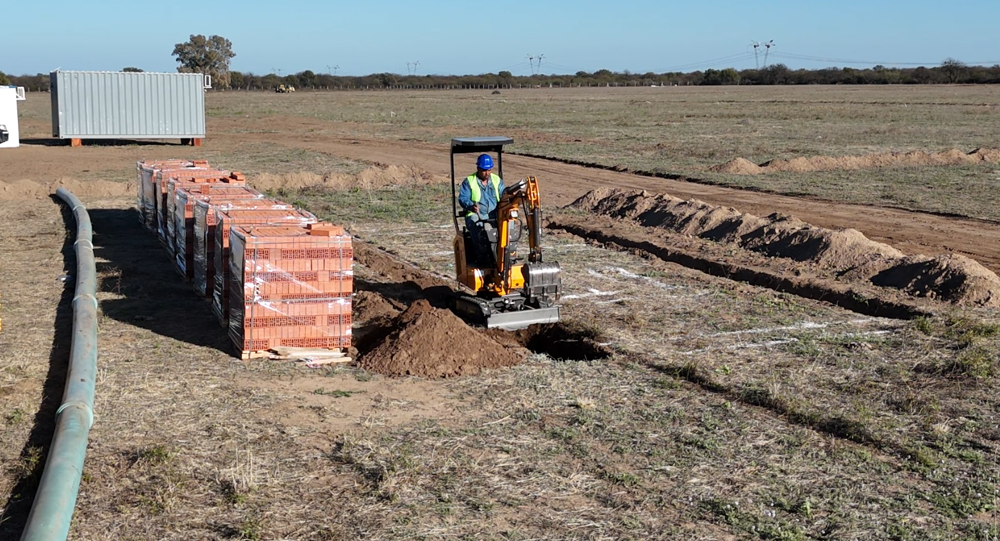
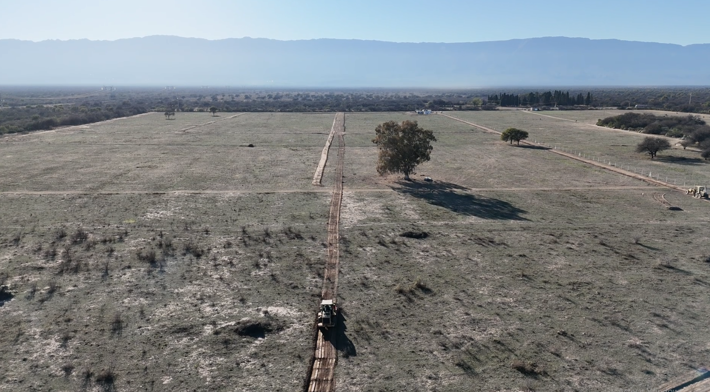
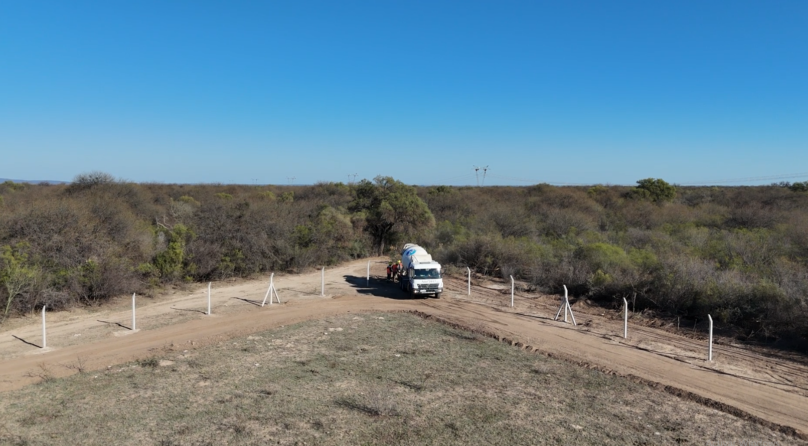
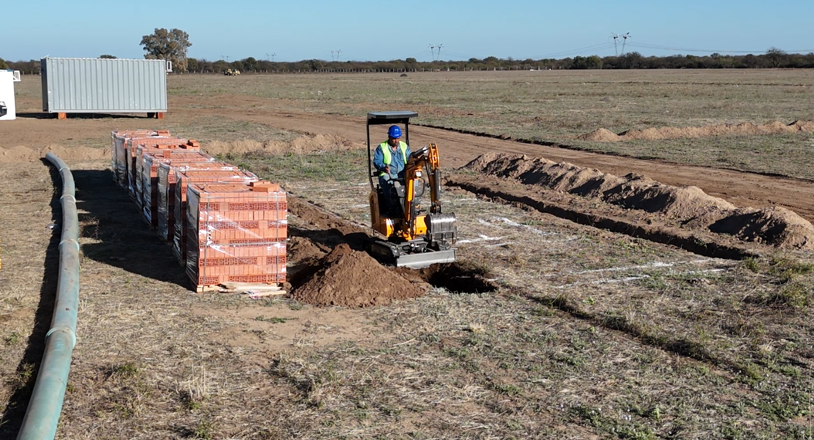
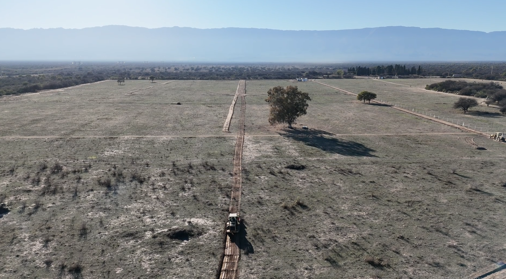
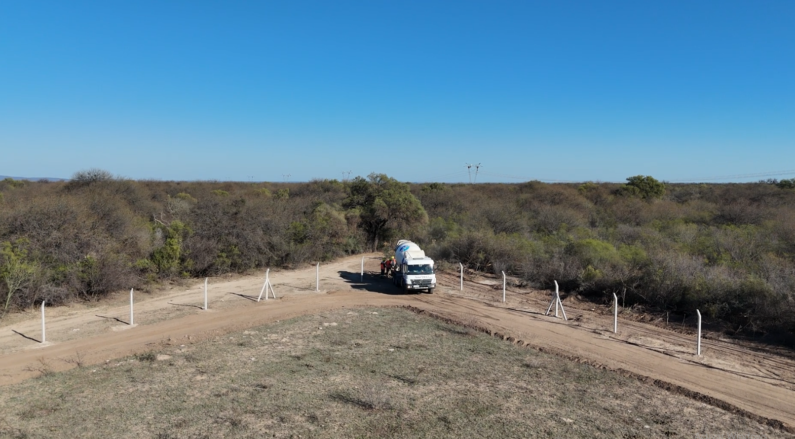

Sobre la Usina Solar
El “Parque Solar Papa Francisco”, sede de la Usina Solar Fotovoltaica CEMDO I, honra el legado del Papa Francisco, impulsando la economía solidaria y el cuidado de nuestra Casa Común.
Esta usina aporta electricidad limpia y renovable a la comunidad, promoviendo un desarrollo sostenible.
- Capacidad instalada: 10 MW (AC)
- Paneles solares: 20.880 bifaciales de 615 W de alta eficiencia
- Producción: Equivalente al 16% del consumo local con beneficios ambientales y económicos
¿Qué es la Energía Solar?
La energía solar es una fuente de energía renovable que se obtiene directamente del sol, utilizando la radiación solar para generar electricidad o calor. Es una alternativa limpia y sostenible a los combustibles fósiles, ya que no produce emisiones contaminantes ni gases de efecto invernadero durante su uso.
Existen dos formas principales de aprovechar la energía solar:
- Energía solar fotovoltaica: convierte la luz solar en electricidad mediante paneles solares compuestos por células fotovoltaicas.
La energía solar es una de las fuentes renovables con mayor crecimiento a nivel mundial debido a sus múltiples beneficios, entre ellos:
- Sostenibilidad: es inagotable y reduce la dependencia de recursos no renovables.
- Reducción de costos: con la tecnología adecuada, la generación solar puede disminuir considerablemente el costo de la electricidad.
- Bajo impacto ambiental: no emite contaminantes ni residuos tóxicos.
- Generación distribuida: permite instalar sistemas solares tanto en grandes plantas como en hogares y empresas.
Gracias a estas ventajas, la energía solar contribuye al desarrollo sostenible y a la mitigación del cambio climático, mejorando la calidad de vida de las comunidades y promoviendo un futuro energético más limpio y seguro.
Videos
Galería


 





Ubicación Geográfica
Interactividad y Trivia
Equipo de Desarrollo
Parsons Tiziano
Programación
Ugolini Gianluca
Programación
Lucero Valentín
Diseño gráfico
Orozco Jeremías
Contenido y Control de Calidad
José Pantaleo
Docente acesor
Contacto
- Dirección: Av. San Martín 255, Villa Dolores, Córdoba
- Teléfono: +54 3544 42-2000
- Email: info@cemdo.com.ar